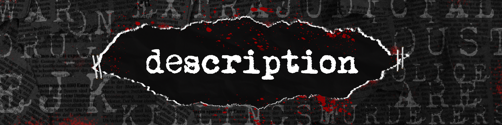

|
|
||||||
| INTRODUCTION | PURPOSE | DESCRIPTION | SUPPORT | CONTACTS | ||
|
Home
Posted at Jun 19 2021 | 7:00 AM SHARE 


 In the Philippines, EJK is one of the issues in the government. It grew even more rampant during the regime of former President Marcos. His declaration of Martial Law contributed to the problem. The current President, Rodrigo Roa Duterte, is linked to former President Ferdinand Marcos because he encourages and tolerates extrajudicial killings. EJK is currently linked to the growing usage of illegal drugs under the current regime. The majority of the deceased are believed to have been slain during the investigation. Families of EJK victims suffer obstacles in the investigation and prosecution of their loved ones. The overall standard of living has also been noted as being impacted. As EJK victims are frequently recognized as the breadwinners of their families, their deaths resulted in severe economic hardship for the families left behind. The Interpretative Phenomenological Analysis (IPA) will be used in this project to gain a better insight and knowledge of the experiences of the relatives of extrajudicial killing victims. IPA is phenomenological in that it examines an individual's lived experience in depth. IPA includes idiography, a microscopic investigation of the experience of a particular set of people. 
READ NEXT: Support |
IF YOU ARE POOR YOU ARE KILLED: EXTRAJUDICIAL EXECUTIONS IN THE PHILIPPINES Amnesty International January 31, 2017
|

|